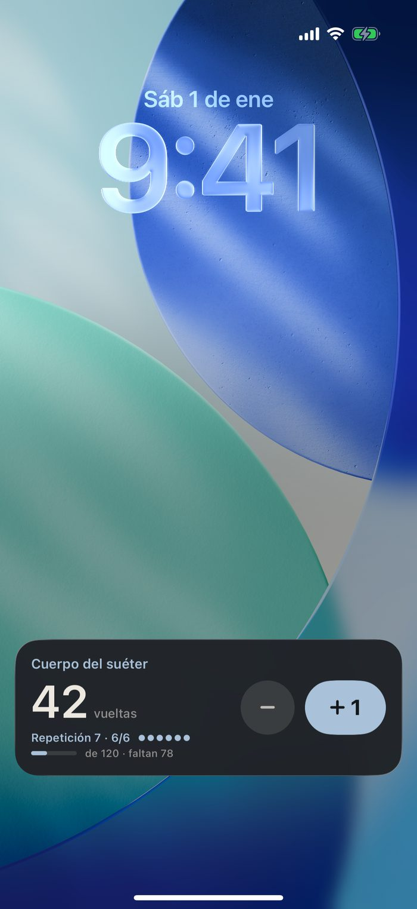
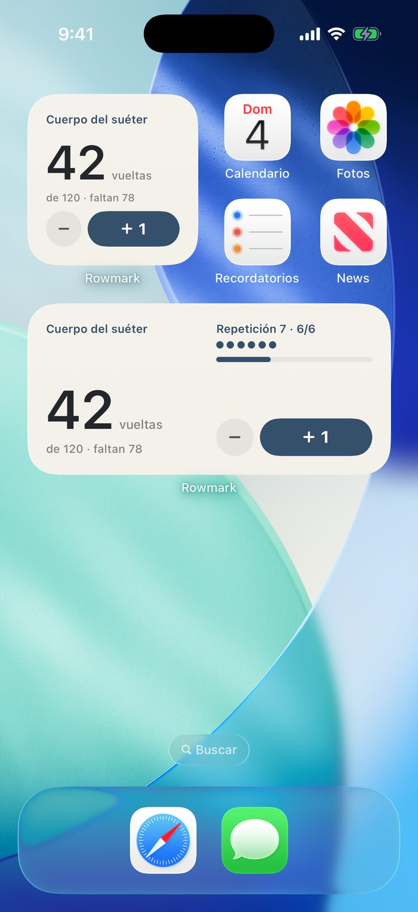

Cómo contar vueltas de tejido desde la pantalla bloqueada del iPhone
Desbloquear el teléfono, buscar la app y tocar +1, con las agujas en las dos manos, en cada vuelta. Un contador en la pantalla bloqueada lo deja en un solo toque.
Estas son las formas de contar sin abrir la app en Rowmark, un contador de vueltas para tejer y crochet.
Tres formas de contar sin abrir la app
Dónde
Qué tocas
Precio
Widget de la pantalla de inicio (pequeño)
+1 y −1 en el widget
Gratis
Contador en la pantalla bloqueada
+1 y −1 en la pantalla bloqueada, en la Dynamic Island y en StandBy, sin desbloquear
Pro
Botón de acción y Centro de control
«+1 vuelta» (iOS 18 o posterior; botón de acción en iPhone 15 Pro o posterior)
Pro
Rowmark Pro es una compra única, no una suscripción.
Contar desde la pantalla bloqueada
Abre Rowmark y toca el proyecto que estás tejiendo en Proyectos.
En «Cuenta sin abrir la app», activa «Pantalla bloqueada».
Bloquea tu iPhone. El contador muestra el proyecto, la vuelta en la que vas y los botones +1 / −1 , que puedes tocar sin desbloquearlo.

iOS mantiene un contador de la pantalla bloqueada activo hasta unas 8 horas seguidas. Cuando desaparezca, abre Rowmark y vuelve a activar «Pantalla bloqueada». Tu cuenta se conserva.
+1 con el botón de acción
En iPhone 15 Pro o posterior con iOS 18 o posterior:
Abre Configuración › Botón de acción.
Elige Controles, luego Rowmark.
Ahora, al pulsar el botón de acción se cuenta una vuelta en tu proyecto actual. También puedes poner «+1 vuelta» en el Centro de control o cambiar por él uno de los botones de la parte inferior de la pantalla bloqueada (mantén presionada la pantalla bloqueada › Personalizar).
Gratis: +1 en la pantalla de inicio
Mantén presionada un área vacía de la pantalla de inicio hasta que las apps se muevan.
Toca Editar (o +), busca «Rowmark», elige el tamaño Pequeño y toca Agregar widget.
Toca +1 o −1 en el widget. La app no se abre.

Preguntas
El contador desapareció de mi pantalla bloqueada.iOS termina un contador de la pantalla bloqueada (una Actividad en vivo) después de unas 8 horas. Abre Rowmark y vuelve a activar «Pantalla bloqueada». Tu cuenta se conserva.
Dice que las Actividades en vivo están desactivadas.Actívalas en Configuración › Rowmark.
¿Puedo contar en la pantalla bloqueada gratis?El contador de la pantalla bloqueada, los widgets de pantalla bloqueada y el botón de acción son parte de Rowmark Pro, una compra única. El +1 y −1 del widget pequeño de la pantalla de inicio son gratis, sin abrir la app.
Estoy tejiendo más de un proyecto.El contador de la pantalla bloqueada sigue al proyecto que eliges en la app. Toca otro proyecto en Proyectos y el contador cambia a ese.